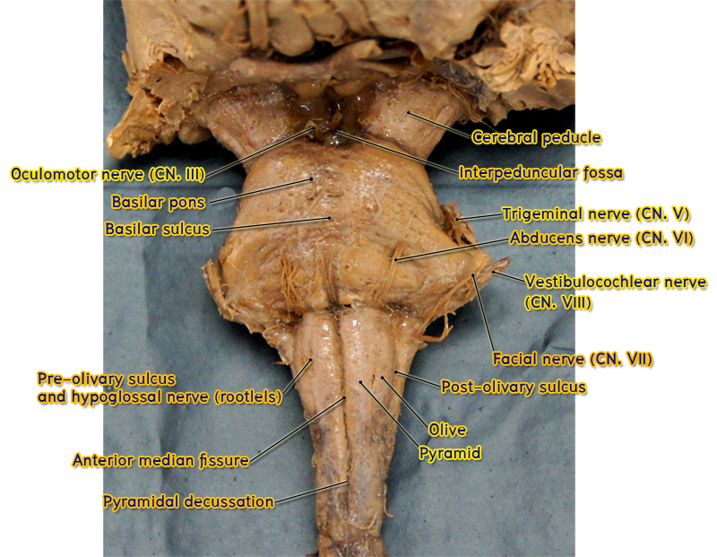
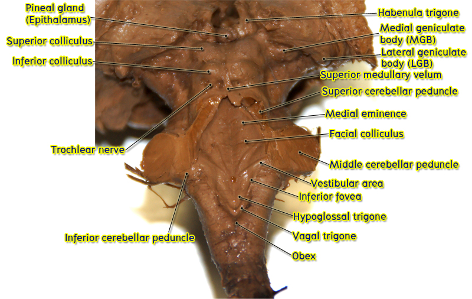

Pons (ventral surface)


ศึกษาจาก isolated brainstem และ whole brain ร่วมกับ atlas ให้ชี้แสดง basilar part ซึ่งอยู่ทางด้าน ventral surface ของ pons มีลักษณะป่องออกคล้ายกับคนตั้งท้อง ถ้าสังเกตให้ละเอียดจะเห็นว่ามีร่องที่ทอดในแนวขวางมากมาย เกิดจาก transverse fibers ที่รวมกันเป็นกลุ่มกลายเป็น middle cerebellar peduncles ขวาและซ้ายเพื่อเข้าสู่ cerebellum บริเวณ midline ของ basilar part ให้ชี้แสดง basilar groove (sulcus) ซึ่งเป็นร่องตื้น ๆ ที่มี basilar artery ทอดอยู่
บริเวณ anterolateral surface ระดับ mid-pons ให้ชี้แสดง trigeminal nerve ที่โผล่ออกมา โดย motor root มีขนาดเล็กกว่าและอยู่ทางด้าน medial กว่า sensory root ที่มีขนาดใหญ่กว่าและอยู่ lateral กว่า
ที่บริเวณร่องที่เป็นแนวต่อระหว่าง pons กับ medulla (pontomedullary sulcus) ให้ชี้แสดง cranial nerve roots ต่อไปนี้จาก medial ไป lateral ตามลำดับคือ
- Abducens nerve (CN VI)
- Facial nerve (CN VII) ประกอบด้วย motor root ที่มีขนาดใหญ่กว่าและอยู่ medial กว่า sensory root ที่มีขนาดเล็กกว่าและอยู่ lateral กว่า (เนื่องจาก sensory root นี้อยู่ระหว่าง motor root และ cranial nerve VIII ที่อยู่ lateral กว่า จึงมีชื่อเรียกว่า intermediate nerve หรือ nervus intermediate
- Vestibulocochlear nerve (CN VII) ประกอบด้วย vestibular nerve อยู่ทาง medial และ cochlear nerve อยู่ทาง lateral
ส่วน dorsal (posterior) surface ของ pons เป็นส่วน floor ของ fourth ventricle และเป็นส่วนประกอบของ rhomboid fossa ให้ศึกษาในหัวข้อต่อไป


2.3 Rhomboid fossa
ศึกษาจาก isolated brainstem ร่วมกับ atlas
Rhomboid fossa เป็นแอ่งรูปสี่เหลี่ยมข้าวหลามตัดที่เป็น floor ของ fourth ventricle ประกอบด้วย posterior surface ของ opened part ของ medulla และ posterior surface ของ pons
ให้ชี้แสดงสิ่งต่อไปนี้
- Obex เป็น inferior median angle ของ rhomboid fossa
- Lateral recesses เป็น lateral angle แต่ละข้างของ rhomboid fossa
- Median sulcus เป็นร่องที่อยู่ในแนว midline ของ rhomboid fossa
- Stria medullaris (of fourth ventricle) เป็นส่วน floor ของ fourth ventricle ที่มีลักษณะเป็นเส้นนูนขึ้นมา มีจุดเริ่มต้นที่ median sulcus และทอดตามแนวขวางออกไปยัง lateral recess ทั้งสองข้าง stria medullaris ทั้งสองข้างเป็นแนวที่แบ่ง superior half ของ rhomboid fossa ซึ่งเป็น posterior surface ของ pons ออกจาก inferior half ของ rhomboid fossa ซึ่งเป็น posterior surface ของ opened part ของ medulla
- Sulcus limitans เป็นร่องที่ทอดขนานอยู่ 2 ข้างของ median sulcus ทำให้แบ่งแต่ละซีกของ floor ของ fourth ventricle ออกเป็น medial part และ lateral part
- Inferior fovea เป็นรอยบุ๋มที่อยู่บริเวณ inferior end ของ sulcus limitans แต่ละข้าง อยู่ในส่วนที่เป็น posterior surface ของ opened part ของ medulla
- Superior fovea เป็นรอยบุ๋มที่อยู่บริเวณ superior end ของ sulcus limitans แต่ละข้าง อยู่ในส่วนที่เป็น posterior surface ของ pons
- Vestibular area เป็น area ที่เป็นส่วนใหญ่ของพื้นที่รูปสามเหลี่ยมที่อยู่ทาง lateral กว่า sulcus limitans แต่ละข้าง จึงมีด้านฐานเป็น sulcus limitans และ apex อยู่ที่ lateral recess ลึกลงไปกว่า area นี้เป็นที่อยู่ของ vestibular nuclei
- Acoustic tubercle เป็นเนินนูนที่อยู่บริเวณ apex ของ lateral part แต่ละข้างของ floor of fourth ventricle เกิดจาก dorsal cochlear nucleus ที่อยู่ลึกลงไปดันออกมา
- Medial part ส่วนที่เป็น posterior surface ของ opened part ของ medulla แต่ละข้าง ถูกแบ่งเป็น 2 triangle เล็ก ๆ โดยร่องตื้น ๆ ที่ทอดเฉียงจาก inferior fovea ไปยัง obex ให้ชี้แสดง hypoglossal trigone ที่อยู่ทาง medial กว่า ลึกกว่า triangle นี้เป็นที่อยู่ของ hypoglossal nuclei นอกจากนั้นให้ชี้แสดง vagal trigone ซึ่งเป็น triangle ที่อยู่ lateral กว่า hypoglossal trigone ลึกลงไปกว่า vagal trigone นี้เป็นที่อยู่ของ dorsal vagal nucleus
- Medial part ส่วนที่เป็น posterior surface ของ pons ให้ชี้แสดง medial eminence ซึ่งเป็นเนินนูนที่ทอดตามแนวยาวอยู่ระหว่าง median sulcus และ superior fovea
- Facial colliculus เป็นส่วน caudal part ของ medial eminence ที่นูนกว้างออก ลึกกว่าบริเวณนี้เป็นจุดที่ internal genu of facial nerve ทอดโค้งข้าม superficial surface ของ abducens nucleus ที่อยู่ลึกเข้าไป


2.4 Cerebellar peduncle
Cerebellar peduncles มีอยู่ 3 คู่ อยู่บริเวณ lateral aspect ของ pons และ roof of fourth ventricle เป็นกลุ่มของ nerve fibers ที่วิ่งเข้าและออกจาก cerebellum เพื่อติดต่อ cerebellum กับ brain stem ให้ชี้แสดง cerebellar peduncles ทั้ง 3 คู่ต่อไปนี้

- Middle cerebellar peduncle (brachium pontis) เป็น massive fibers ที่ผ่านมาจาก basilar part ของ pons อยู่ lateral ที่สุด
- Inferior cerebellar peduncle (restiform body) อยู่ทาง inferomedial part ของ middle cerebellar peduncle เป็นกลุ่มของ nerve fibers ที่เชื่อมติดต่อระหว่าง medulla กับ cerebellum
Superior cerebellar peduncle (brachium conjunctivum) อยู่ทาง superomedial part ของ middle cerebellar peduncle เป็นกลุ่มของ nerve fibers ที่ติดต่อระหว่าง rostral pons กับ cerebellum